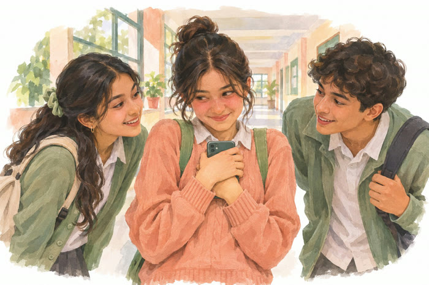

Listen to the text
Speed:

My name is Orysia, and I have to admit one thing: for a long time I hated photos of myself. In every picture I looked either too serious or too childish. So I found a simple solution. I stood behind the camera. It started two years ago, when my aunt gave me her old camera. I took pictures of everything: our cat, the rain on the window, my grandfather's hands. Photography became my way of looking at the world. Last September I decided to register for the school photography club, and that is where I met my three best friends. We are very different. Ostap is unstoppable. If he has an idea, he will not sleep until it is done. Last winter he wanted a photo of the sunrise over the river, and he got up at five o'clock six days in a row. Zlata is calm and careful. She can wait for an hour until a bird sits where she wants it. And Tymur loves to disagree. Whatever you say, he will answer, "Yes, but..." It is sometimes annoying, but our discussions are never boring. In spring the club prepared an exhibition called "Faces of Our School". Everybody had to bring a portrait of a friend. I photographed Zlata in the library, and it was one of my best pictures. Then Tymur said, "Now somebody has to take a picture of you." "No way," I said. "I am the photographer." "That is not fair," Tymur disagreed, as usual. "You can't hide behind the camera all your life." I wanted to tell him not to mess with my rules. But Ostap was already holding the camera, and Zlata was telling a silly joke. I laughed, and Ostap pressed the button. When I saw the photo, I was surprised. The girl in it was not too serious and not childish. She was just a happy person among friends. That portrait was shown at the exhibition, and I didn't ask anybody to take it down. I have understood something about my character. I am shy, but I am not weak. I am quiet, but I am not boring. And I am lucky, because my friends see me better than I see myself.
Tap any sentence to hear it again.
Сподобалось? На сайті ще більше матеріалів для вчителів!
Reader, презентації, ігри, діагностичні та контрольні роботи до підручників 1-11 класів.
Перейти на сайт materials.allaenglish.com